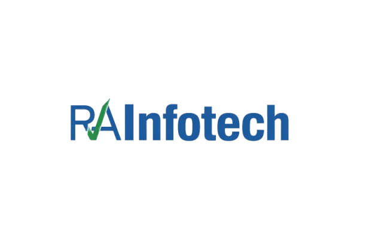
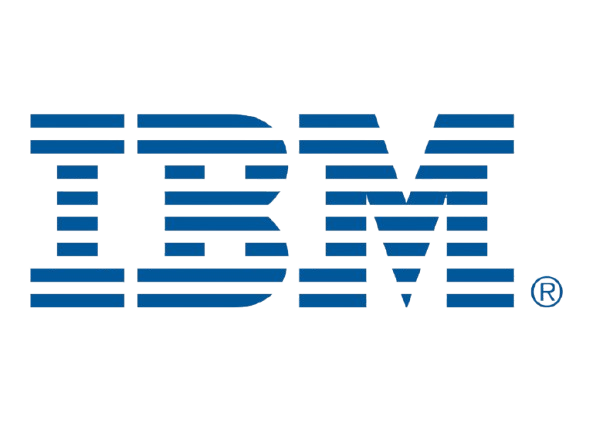
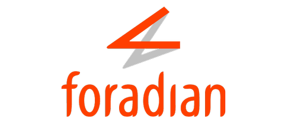

Professional Summary
Solution Architect and Senior Technical Leader with over 15 years of experience architecting, modernizing, and scaling enterprise-grade platforms across insurance, engineering, fintech, healthcare, manufacturing, and public sector ecosystems. Proven track record of leading complex digital transformation initiatives, designing API-first and cloud-native architectures, and delivering high-performance distributed systems operating at scale.
Extensive hands-on expertise in Node.js, Angular, Java, Spring Boot, microservices, event-driven systems, Kubernetes orchestration, CI/CD pipelines, and DevSecOps practices. Adept at designing resilient, scalable architectures with strong emphasis on performance engineering, observability (Prometheus, Grafana), containerization (Docker), and cloud-native deployment strategies.
Demonstrated leadership in API orchestration, backend flow design, integration architecture (ESB, BPM, Teiid), and enterprise modernization programs. Successfully migrated legacy systems to cloud-native microservices, improved system performance by up to 40%, reduced development timelines by 25% through reusable architecture patterns, and delivered zero-downtime migrations across multiple modules.
Strong believer in security-by-design, clean architecture principles, domain-driven thinking, and cross-functional collaboration. Experienced in mentoring global teams, establishing engineering best practices, defining architectural governance standards, and translating complex domain requirements (insurance claims, engineering workflows, government systems) into scalable technical solutions.
Combines deep technical expertise with strategic architectural vision - balanc25g innovation, reliability, and business impact.
Experience
Senior Technical Lead May 2025 - current
- Architect API orchestration, frontend/backend delivery, Kubernetes deployments & lead tech teams for scalable solutions
- Led API orchestration and backend flow design for IMPT and Trajectory Workbench using Node.js and Teiid, enhancing data aggregation across systems
- Designed API contracts & integration architecture with optimized error handling for high-volume engineering workflows
- Improved architecture by identifying bottlenecks, proposing service decoupling, and enhancing deployment strategies
- Collaborated with cross-functional teams to translate complex drilling requirements into technical solutions
- Developed scalable microservices on Kubernetes, defining containerization strategies and deployment best practices
- Integrated analytics and engineering pipelines in Trajectory Workbench for improved visualization and decision-making
- Acted as a technical mentor, ensuring code quality and adherence to enterprise development standards
Lead SDE Feb 2018 - Jan 2025
- Led design and delivery of enterprise applications, owning architecture and integration across platforms
- Architected multi-tenant, configurable insurance platforms supporting B2B, B2C, and B2E channels across multiple geographies with regulatory compliance considerations
- Mentored cross-functional global teams and established best engineering practices
- Translated complex requirements into scalable solutions, driving cloud modernization
- Ensured high system reliability with proactive performance monitoring and incident management
- Delivered applications for high-profile clients in Insurance, Retail and GOV Domains
- Conducted technical analysis for legacy applications migrating to cloud solutions
- Designed and implemented microservices-based architectures using containerized deployments (Docker/Kubernetes), enabling horizontal scalability and improved fault tolerance
- Reduced development time by 25% with reusable components and CI practices
- Led end-to-end integration strategy with third-party systems including payment gateways, core insurance systems, KYC providers, CRM platforms, and regulatory APIs
- Implemented role-based access control (RBAC), secure authentication flows (OAuth2/JWT), and compliance-aligned data handling for sensitive insurance data
- Collaborated with product and business stakeholders to design configurable policy lifecycle workflows (New Business, Underwriting, Endorsements, Claims, Renewals)
- Led multi-location delivery teams across time zones, improving sprint predictability and delivery velocity
ESB Consultant  Aug 2017 - Feb 2018
- Documented existing enterprise service bus (ESB) processes and data flows,producing comprehensive technical documentation for an ESB 6.1.2 environment
- Designed and implemented enhancements to existing ESB processes and flows, resulting in improved efficiency and reliability
Tech Lead
 Jan 2015 - Jul 2017
Jan 2015 - Jul 2017
- Improved code quality by 40% through rigorous code reviews adhering to best practices.
- Provided comprehensive UAT and production support, ensuring smooth system operation and effective issue resolution.
- Managed software deployments and implemented system enhancements, resulting in improved functionality and performance optimization.
- Developed and delivered new features for a healthcare client's order fulfillment system, leading to increased efficiency and process automation.
- Created detailed technical documentation, including high-level and low-level design documents, facilitating enhanced project knowledge transfer.
Application Developer  Aug 2012 - Jan 2015
- Enhanced existing production applications within an Integration Hub environment, optimizing performance and functionality
- Developed and implemented applications to streamline business operations for order capture, product delivery, and invoicing processes
- Contributed to the development of a Universal Credit application for the UK Government, supporting essential public services
Software Developer Mar 2010 - Aug 2012
- Developed high-level design documentation for software applications within the manufacturing domain, tailored for loan and lease vehicle management
- Enhanced interactive voice response (IVR) applications utilized by customers in the manufacturing sector to check loan statuses and apply for vehicle loans or leases
- These enhancements served to improve customer experience and self-service capabilities
Senior Engineer  April 2009 - Mar 2010
- Created custom WordPress plugins and themes tailored to client specifications, extending website functionality and design possibilities
- Developed and maintained both static and dynamic websites, delivering engaging and functional web experiences using HTML, CSS, jQuery, AJAX, and PHP